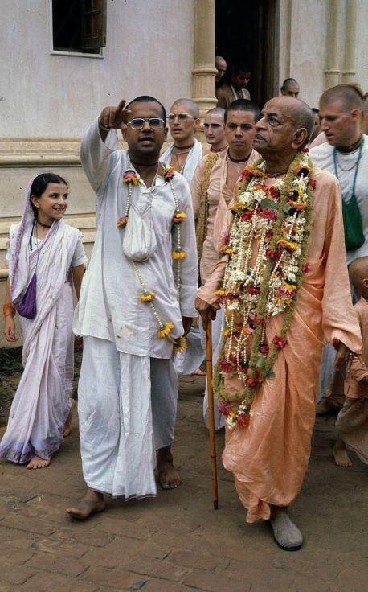

"But he looks Special"

Prior to my meeting Srila Prabhupada, I had zero exposure to sadhus. I had never been to Vrindavan in my life. [chuckles] I’d never even heard of Vrindavan or Mayapur before I met Prabhupada and I had never heard of Lord Caitanya. The brief introduction to Prabhupada was given to me by a Bengali gentleman who said, “I’ve touched the feet of many sadhus, but he looks special.” Prabhupada had a strong desire to preach to the Indian community because he wanted them to take to Krishna Consciousness, which they had forgotten. Prabhupada gave me a lot of attention, and I became Prabhupada’s first Indian disciple in the West.
~ HH Gopāl Krsna Goswāmi Mahārāja, Prabhupād Memories vedio tapes.